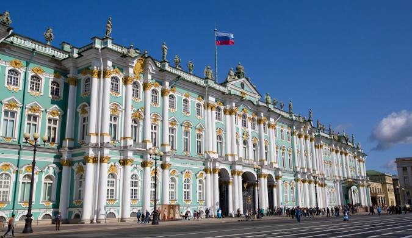
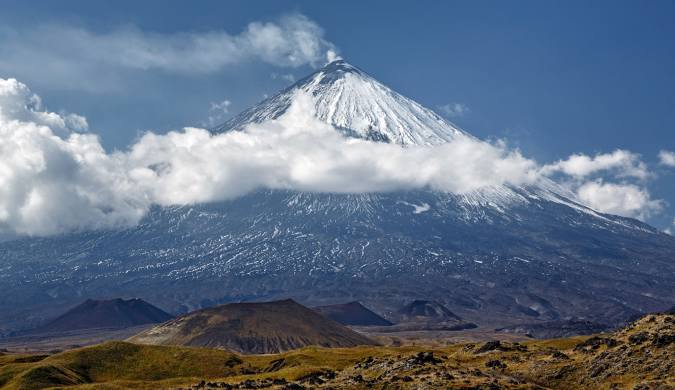
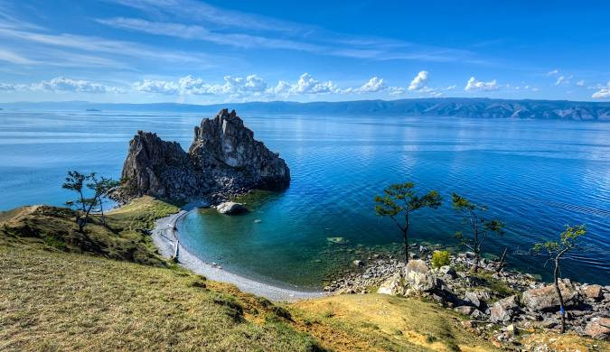

Moskva - Qizil Maydon
Rossiya Federatsiyasining poytaxti Moskva shahrining eng qad. qismi, qalʼasi. Moskva daryosining chap qirgʻogʻida,
Neglinvaya daryosi unga quyiladigan joydagi Borovitsk tepaligida kichik bir istehkom sifatida yuzaga kelgan
(11 — 12-asrlar, 1,5 ga atrofida). Bu istehkom-qalʼa qadimda "gard" yoki "grad Moskva" deb atalgan, 14-asr dan K.
nomini olgan. Bu yerda knyaz Yuriy Dolgorukiy buyrugʻi bilan 1156-yilda qurilgan "shahar" — istehkom esa, avvalgi
qalʼa hududidan 5—6 barobar kengroq maydonni tashqil etgan va yogʻoch devor bilan oʻralgan.

Sankt-Peterburg - Ermitaj Muzeyi
Sankt-Peterburgdagi badiiy va madaniytarixiy davlat muzeyi; jahondagi eng yirik muzeylardan. U Neva sohili va
Lelingradning Saroy maydonida beshta binoni egallagan. Ermitajga 1764-yil Yekaterina II tomonidan
(Berlindan golland va flamand maktablari rassomlarining asarlarini olib keltirilishi asosida) asos solingan
(1852-yilda tomoshabinlar uchun qisman ochilgan), bu asarlar Qishki saroyning „Ermitaj“
(fransuzcha yepsh1a§e — xolis joy) deb atalgan apartamentiga joylashtirilgan

Kamchatka - Klyuchevskaya Sopka Vulkan
Kamchatka yarim oroli vulkanlari bilan mashhur bo'lib, u yerda dunyoning eng faol vulkanlaridan biri — Klyuchevskaya Sopka joylashgan. Bu joy tabiiy mo'jizalar va hayajonli manzaralari bilan mashhur.

Baykal Ko'li
Sharqiy Sibirning janubidagi chuchuk suvli koʻl. 456 m balandlikda joylashgan, togʻlar bilan oʻralgan. Maydoni
31,5 ming km². Uzunligi 636 km, oʻrtacha eni 48 km. Baykal dunyodagi eng chuqur (1620 m gacha) koʻl. Tektonik
jarayonlar natijasida vujudga kelgan. Baykalga 336 ta daryo (shu jumladan Selenga, Barguzin, Yuqori Angara va
boshqalar) quyiladi.
Kazan - Qolsharif Masjidi
Dastlab, masjid 16-asrda Qozon Kremlida qurilgan. U yerda xizmat qilgan diniy olim Qul Sharif nomi bilan atalgan .
Kul Sharif 1552 yilda Qozonni qamal qilish paytida rus qo‘shinlaridan Qozonni himoya qilish chog‘ida o‘zining
ko‘plab shogirdlari bilan birga halok bo‘lgan va masjid Ivan Grozniy qo‘shinlari tomonidan vayron qilingan.